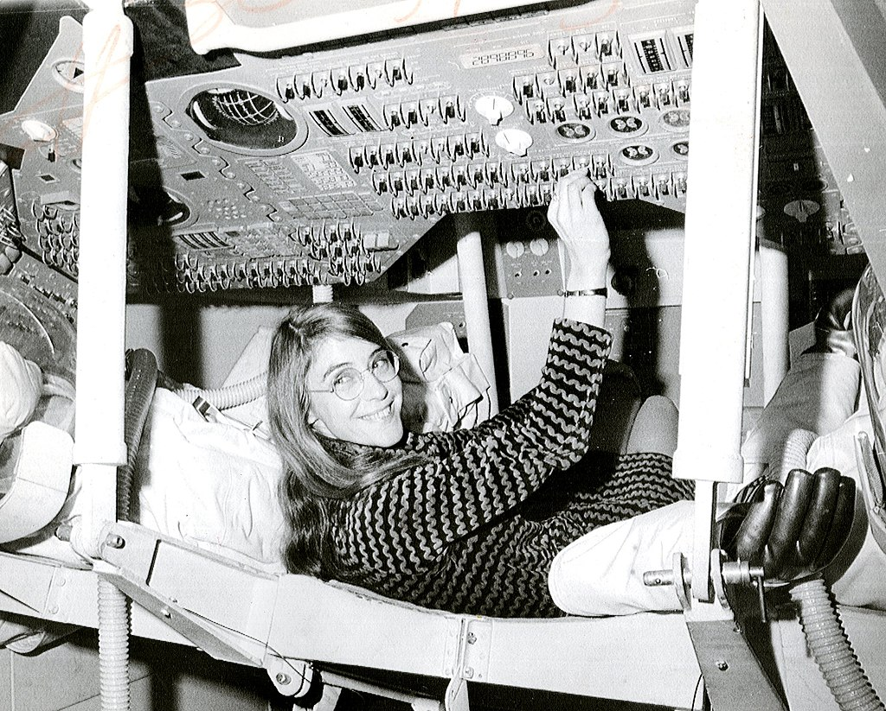

The Apollo Program
In one of the critical moments of the Apollo 11 mission, the Apollo Guidance Computer together with the on-board flight software averted an abort of the landing on the Moon. Three minutes before the lunar lander reached the Moon's surface, several computer alarms were triggered. The on-board flight software captured these alarms with the "never supposed to happen displays" interrupting the astronauts with priority alarm displays. Hamilton had prepared for just this situation years before:
There was one other failsafe that Hamilton likes to remember. Her "priority display" innovation had created a knock-on risk that astronaut and computer would slip out of synch just when it mattered most. As the alarms went off and priority displays replaced normal ones, the actual switchover to new programmes behind the screens was happening "a step slower" than it would today. Hamilton had thought long and hard about this. It meant that if Aldrin, say, hit a button on the priority display too quickly, he might still get a "normal" response. Her solution: when you see a priority display, first count to five.
The astronauts had inadvertently left the rendezvous radar switch on, causing these alarms to be triggered. The computer was overloaded with interrupts caused by incorrectly phased power supplied to the lander's rendezvous radar. The program alarms indicated "executive overflows", meaning the guidance computer could not complete all of its tasks in real time and had to postpone some of them. The asynchronous executive designed by J. Halcombe Laning was used by Hamilton's team to develop asynchronous flight software:
Because of the flight software's system-software's error detection and recovery techniques that included its system-wide "kill and recompute" from a "safe place" restart approach to its snapshot and rollback techniques, the Display Interface Routines (AKA the priority displays) together with its man-in-the-loop capabilities were able to be created in order to have the capability to interrupt the astronauts' normal mission displays with priority displays of critical alarms in case of an emergency. This depended on our assigning a unique priority to every process in the software in order to ensure that all of its events would take place in the correct order and at the right time relative to everything else that was going on.

Hamilton's priority alarm displays interrupted the astronauts' normal displays to warn them that there was an emergency "giving the astronauts a go/no go decision (to land or not to land)". Jack Garman, a NASA computer engineer in mission control, recognized the meaning of the errors that were presented to the astronauts by the priority displays and shouted, "Go, go!" and they continued. Paul Curto, senior technologist who nominated Hamilton for a NASA Space Act Award, called Hamilton's work "the foundation for ultra-reliable software design"
Hamilton later wrote of the incident:
The computer (or rather the software in it) was smart enough to recognize that it was being asked to perform more tasks than it should be performing. It then sent out an alarm, which meant to the astronaut, 'I'm overloaded with more tasks than I should be doing at this time and I'm going to keep only the more important tasks'; i.e., the ones needed for landing ... Actually, the computer was programmed to do more than recognize error conditions. A complete set of recovery programs was incorporated into the software. The software's action, in this case, was to eliminate lower priority tasks and re-establish the more important ones ... If the computer hadn't recognized this problem and taken recovery action, I doubt if Apollo 11 would have been the successful moon landing it was.
— Letter from Margaret H. Hamilton, Director of Apollo Flight Computer Programming MIT Draper Laboratory, Cambridge, Massachusetts, titled "Computer Got Loaded", published in Datamation, March 1, 1971